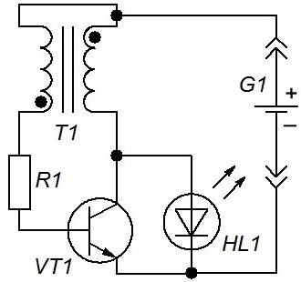
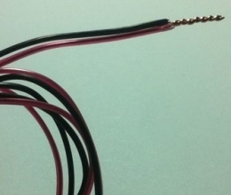
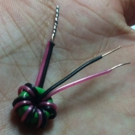
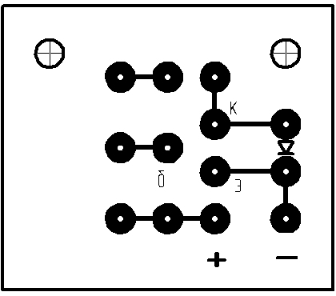
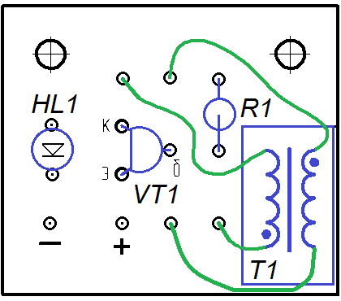
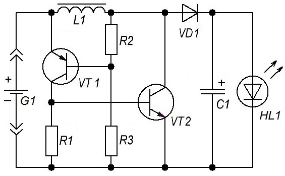
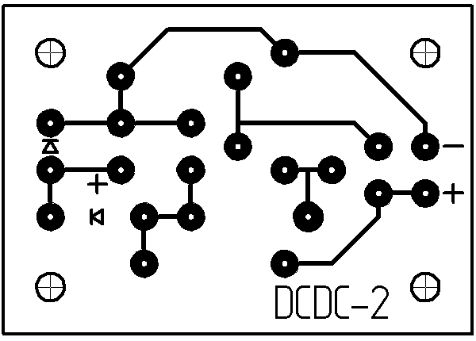
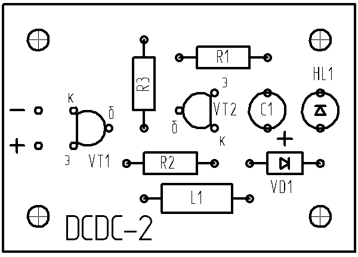
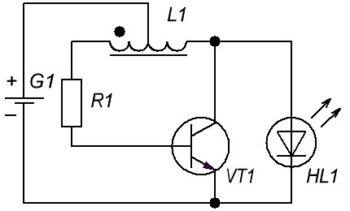

Простые повышающие DC/DC-преобразователи для батарейного питания
Если питание аппаратуры осуществляется от гальванических элементов или аккумуляторов, то преобразование напряжения до нужного уровня возможно лишь с помощью DC/DC-преобразователей.
Принцип работы DC/DC-преобразователей: постоянное напряжение преобразуется в переменное, как правило, с частотой несколько десятков и даже сотен килогерц, повышается (понижается), а затем выпрямляется и подается в нагрузку. Такие преобразователи часто называются импульсными.
Ниже представлены несколько простейших повышающих DC/DC-преобразователей, служащих для того, чтобы запитать небольшое маломощное устройство, например, светодиод, от одного элемента питания с напряжением 1,5 В. Эти схемы повышающих преобразователей можно применять в фонаре или светильнике, в различных электронных самоделках, для которых критично использование минимального количества элементов питания.
Cхема №1
На (рис. 1) представлена схема релаксационного автогенератора, представляющего собой блокинг-генератор со встречным включением обмоток трансформатора. Принцип работы данного преобразователя следующий: при включении, ток протекающий через одну из обмоток трансформатора и эмиттерный переход транзистора – открывает его, в результате чего он открывается и больший ток начинает течь через вторую обмотку трансформатора и открытый транзистор. В результате в обмотке, подключенной к базе транзистора наводится ЭДС, запирающая транзистор и ток через него обрывается. В этот момент энергия, запасенная в магнитном поле трансформатора, в результате явления самоиндукции, высвобождается и через светодиод начинает протекать ток, заставляющий его светиться. Затем процесс повторяется.

Таблица 1
| Обозначение | Наименование | Номинал | Примечание |
|---|---|---|---|
| G1 | Гальванический элемент | 1,5 В | |
| HL1 | Светодиод | АЛ307 | |
| R1 | Резистор постоянный | 1 кОм/0,25 Вт | 750 Ом - 1,5 кОм |
| Т1 | Трансформатор | 15-30 витков сдвоенного провода | |
| VT1 | Транзистор биполярный | МП37Б | BC337, 2N3904, MPSH10 |
Для изготовления трансформатора необходимы ферритовое кольцо внешним диаметром около 10 мм и два одинаковых по длине провода. На концах проводов снимите изоляцию (примерно на 5 мм). Одни концы проводов спаяйте вместе (рис. 3).

Просуньте эти концы через кольцо немного и затем другими концами начинайте мотать обмотку виток к витку. Провода не должны перекручиваться между собой. Количество витков - от 15 до 30. Отрежьте лишнюю часть проволоки оставив около 2 сантиметров для дальнейшей пайки (рис. 4).

Транзистор желательно выбрать с минимальным напряжением насыщения. Светодиод – любой, но мощный многокристальный будет светиться не в полную силу.
Без нагрузки данная схема не работает.


Cхема №2
Вторая схема - это типовой step-up-преобразователь, выполненный на двух транзисторах. Достоинством данной схемы является то, что не надо изготавливать трансформатор, а достаточно взять готовый дроссель.

Таблица 2
| Обозначение | Наименование | Номинал | Примечание |
|---|---|---|---|
| C1 | Конденсатор электролитический | 22 мкФ | 1 - 33 мкФ |
| G1 | Гальванический элемент | 1,5 В | |
| HL1 | Светодиод | АЛ307 | |
| L1 | Дроссель | 470 мкГн | 100 - 470 мкГн |
| R1 | Резистор постоянный | 750 Ом/0,25 Вт | |
| R2 | Резистор постоянный | 220 кОм/0,25 Вт | |
| R3 | Резистор постоянный | 100 кОм/0,25 Вт | |
| VD1 | Диод | 1N5818 | любой диод Шоттки |
| VT1 | Транзистор биполярный | BC556 | BC327 |
| VT2 | Транзистор биполярный | BC546 | BC337 |
Принцип работы сводится к тому, что ток через дроссель периодически прерывается транзистором VT2, а энергия самоиндукции направляется через диод в конденсатор C1 и отдается в нагрузку.
Номиналы резисторов могут быть заменены на имеющие в наличии в пределах 10-15% от указанных, однако это влияет на минимальное напряжение, при котором может работать преобразователь.
Светодиод необходимо выбирать с учетом того, что выходная мощность схемы весьма невелика. Правильно собранное устройство сразу же начинает работать и не нуждается в настройке.
Напряжение на выходе можно стабилизировать, установив стабилитрон необходимого номинала параллельно конденсатору C1, однако следует помнить, что при подключении потребителя напряжение может проседать и становиться недостаточным.
ВНИМАНИЕ! Без нагрузки данная схема может вырабатывать высокое напряжение! В случае использования без стабилизируещего элемента на выходе, конденсатор C1 окажется заряжен до максимального напряжения, что в случае последующего подключения нагрузки может привести к её выходу из строя!


Cхема №3
Для изготовления тороидального трансформатора схемы №3 (рис. 7) подойдет сердечник дросселя фильтра блока питания ПК. Для обмоток необходимы два куска провода длиной по 0,7 метра от жил кабеля "витая пара". Обмотки намотать сразу в два провода. Средняя точка формируется соединением начала одной обмотки с концом другой.

Таблица 3
| Обозначение | Наименование | Номинал | Примечание |
|---|---|---|---|
| G1 | Гальванический элемент | 0,3...1,5 В | |
| HL1 | Светодиод | АЛ307 | |
| L1 | Дроссель | 10...30 витков | |
| R1 | Резистор постоянный | 1 кОм/0,25 Вт | 300 Ом - 10 кОм |
| VT1 | Транзистор биполярный | C1815 |
Применение тороидального трансформатора обеспечивает высокий КПД и экономичность схемы преобразователя.
Источники
oao-sozvezdie.ru - Простые повышающие DC/DC преобразователи своими руками для батарейного питания